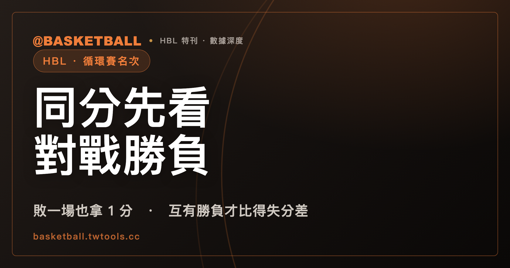

HBL 分組循環賽積分相等，名次先看對戰勝負
114 學年度規程規定，HBL 循環賽的名次依名次積分計算，敗一場也拿 1 分。分組循環賽中 2 隊或以上積分相等時，先以對戰勝負關係判定；積分相等且互有勝負，才進入得失分差與總得分的四步順序，分組賽結束後仍無法判定名次才抽籤。單循環不分組的階段是否套用這套同分判定，規程沒有寫。

新手村｜HBL・循環賽名次與同分判定
本文依 114 學年度高級中等學校籃球聯賽競賽規程（修正版）寫成；新學年度若改版，以 HBL 官網最新規程為準。本文引用的是 2026 年 9 月 27 日逐頁擷取的規程文字，部分頁面只有節錄；文中說「規程沒有寫」，指的是本文引用的文字裡沒有，不代表官方完整規程一定沒有。
第一次認真看 HBL 的循環賽戰績，會碰到一個很實際的問題：兩支球隊打完之後積分一樣，誰排前面？很容易直接想到比得失分差，但 114 學年度規程第 13 條寫的順序不是這樣起頭的。條文先看兩隊之間的對戰勝負，只有在積分相等而且互有勝負時，才一步一步比到得失分差與總得分，全部比完還分不出來，才用抽籤。
這篇文章把第 13 條拆成幾個問題：名次積分怎麼算、哪些階段有循環賽、同分時先看什麼、四步順序長什麼樣、抽籤排在哪裡，以及條文沒有回答什麼。讀完之後，你應該能拿一組標明「假設」的成績，自己判一次分組循環賽的名次。
輸球也拿 1 分：名次積分是勝 2 分、敗 1 分、棄權或沒收 0 分
114 學年度規程第 13 條一規定，球隊在每組比賽的名次，依勝負場數以「名次積分」計算：勝 1 場得 2 分，敗 1 場得 1 分（括號註明包括人數不足判定失敗者），棄權或沒收比賽得 0 分。也就是說，輸球本身不是 0 分，0 分留給棄權與沒收。
這套算法的適用範圍寫在第 13 條二：積分程序適用於所有包含循環賽的競賽制度，條文沒有另外區分甲級或乙級、男生組或女生組。至於「名次積分」和口語裡的「積分」是不是同一個東西，規程沒有另外定義，本文一律沿用規程的詞。
沒收在制度上還有一個後果，出現在第 17 條一項下：114 學年度規程規定，參賽球隊被沒收比賽兩次，取消其未賽之賽程，而且在循環賽中已賽的結果不予計算，相關球隊的得失分也一併不予計算。這裡只點出這條制度存在，本文不展開。
甲級與乙級的哪些階段有循環賽？
名次積分適用於包含循環賽的制度，所以先看 114 學年度規程第 11 條，哪些階段寫了循環賽。整理如下（賽制寫法都是規程原文的用語；「擇優」怎麼比，規程沒有寫）：
| 級別與階段（114 學年度規程） | 規程寫的比賽制度 |
|---|---|
| 甲級男生組預賽 | 分組單循環制 |
| 甲級女生組預賽 | 分組單循環制，後擇優外卡制 |
| 甲級男生組複賽 | 分組單循環制，後擇優外卡制 |
| 甲級女生組複賽 | 單循環制（賽程由本會排定之） |
| 甲級男生組準決賽 | 單循環制（賽程由本會排定之） |
| 甲級總決賽 | 淘汰排名賽 |
| 乙級縣市預賽 | 5 隊（含）以下採單循環制；6 隊（含）以上採分組單循環制 |
| 乙級分區複賽 | 第一輪採分組單循環賽制，第二輪採單淘汰賽制 |
| 乙級全國決賽 | 第一輪採分組循環制，第二輪採單淘汰排名制 |
表裡有兩種寫法：「分組」單循環或循環，與不分組的「單循環制」。這個差別在後面很重要，因為第 13 條三談同分判定時，寫的是「分組循環賽」。甲級五道關卡怎麼銜接，可以看HBL 甲級賽制五道關卡；甲乙級的整體差異，可以看甲級與乙級的差別；乙級一路打到全國決賽的流程，可以看乙級晉級路線。
分組循環賽積分相等，名次的第一步看什麼？
114 學年度規程第 13 條三的第一句是：分組循環賽中 2 隊或 2 隊以上積分相等時，以對戰勝負關係判定名次。
這一句的重點是順序。同分之後，條文先指向的是對戰勝負關係，得失分差要等到後面才登場。「對戰勝負關係」是規程有用、但沒有定義的詞：兩隊之間誰贏了誰，是字面上容易想到的讀法，不過三隊以上同分時這個關係怎麼判，規程沒有寫，本文也不補答案。
條文接著寫了一個進入下一層的條件：若 2 隊或 2 隊以上積分相等，且互有勝負，應進一步依照下列順序判定名次。換句話說，(一) 到 (四) 這四步，在 114 學年度規程的分組循環賽裡，是為「積分相等且互有勝負」準備的。「互有勝負」同樣是規程有用但沒有定義的詞。
積分相等又互有勝負，才會進入四步順序
進入四步順序之後，第 13 條三依序列出四個比較項目，數字大的、較高者排前面：
| 順序 | 規程寫的比較項目 | 白話 |
|---|---|---|
| (一) | 同組相關球隊比賽得失分差較高者 | 同分那幾隊之間的得失分差 |
| (二) | 同組相關球隊總比賽得分較高者 | 同分那幾隊之間的總得分 |
| (三) | 整組比賽得失分差較高者 | 整個分組所有比賽的得失分差 |
| (四) | 整組比賽總得分較高者 | 整個分組所有比賽的總得分 |
這張表的「白話」欄是本文的讀法，不是規程的定義。「同組相關球隊」與「整組」，規程都沒有給定義；照 (一)(二) 的字面，本文把「同組相關球隊」讀成同分的那幾隊，「整組」讀成整個分組，若日後官方另有說明，以官方為準。「得失分差」規程也沒有定義，一般的算法是得分減失分，這是通用算法，不是規程用語。
前兩步只看同分球隊彼此之間的比賽，後兩步才把範圍放大到整個分組。這是從 (一) 到 (四) 字面上看得出的結構，規程沒有說明這樣安排的理由，本文也不推測。
抽籤在四步都無法判定名次時才出現
第 13 條三的末句寫：以上程序在分組賽結束後仍無法判定名次時，以抽籤決定名次。所以在 114 學年度規程的分組循環賽裡，抽籤排在對戰勝負與四步順序之後，不是同分時的第一個動作。至於誰來抽、怎麼抽、何時抽，規程只寫了「以抽籤決定」，沒有更多描述。
有一個詞要分清楚：第 11 條乙級分區複賽出現的「抽排」，是賽程抽籤排位，條文寫的是各縣市冠軍隊優先抽排。它和第 13 條這裡「抽籤決定名次」是兩件事，前者決定隊伍排進哪一組，後者決定同分之後的名次。
判出一或多隊名次後，剩下的隊伍要再跑一次程序
第 13 條四寫得很短：若以上述程序已經可以判定一或多個隊伍的名次，剩餘隊伍的名次須再以前項的程序判定。
白話來說，同分的隊伍有好幾支時，程序可能沒有一次把所有名次排完；判出其中一隊或幾隊之後，剩下的隊伍要回到前項程序，再判一次。至於三隊以上互有勝負時，對戰勝負關係具體怎麼看，第 13 條沒有給算式或範例，條文的依據只有這一句「再以前項的程序判定」。
單循環不分組的階段，同分怎麼判？條文沒有寫
前面表格裡有幾個階段寫的是不分組的「單循環制」：甲級女生組複賽、甲級男生組準決賽，還有乙級縣市預賽 5 隊（含）以下的情況。同分判定在這些階段怎麼處理，值得單獨說一下。
第 13 條二寫的是積分程序適用於所有包含循環賽的競賽制度；第 13 條三寫的是「分組循環賽」，(三)(四) 又寫「整組」。114 學年度規程沒有在第 13 條說明不分組的單循環階段是否套用第三款，也沒有說明「整組」在不分組時指什麼。這是本文照條文結構做的觀察，不是規程的話，所以沒有答案可以補。
除了這一題，第 13 條沒有回答的問題還有：「後擇優外卡制」的擇優怎麼比、甲級總決賽的「淘汰排名賽」與乙級「單淘汰排名制」怎麼排名、總決賽用不用第 13 條、抽籤的細節。遇到這些問題，本文的處理是照實說「規程沒寫」，需要確定答案時，請看 HBL 官網最新規程。
拿一組假設成績，自己判一次名次
下面是一個明確標示的「假設」練習，不是任何真實球隊或真實賽事的成績。
假設 114 學年度規程的某個分組單循環賽，一組有甲、乙、丙、丁四隊，每隊打 3 場。成績如下：
- 甲隊勝乙隊 60 比 55，甲隊勝丁隊，但輸給丙隊 62 比 70。
- 乙隊勝丙隊 58 比 55，乙隊勝丁隊，但輸給甲隊。
- 丙隊勝甲隊，丙隊勝丁隊，但輸給乙隊。
- 丁隊三戰全敗。
第一步，依第 13 條一算名次積分。甲、乙、丙各勝 2 場、敗 1 場，都是 2 × 2 加 1，等於 5 分；丁隊敗 3 場，是 3 分。丁隊積分較低，名次排在甲、乙、丙之後，不用比。甲、乙、丙 3 隊積分相等。
第二步，依第 13 條三，先看對戰勝負關係。甲勝乙、乙勝丙、丙勝甲，三隊各勝一場、各敗一場。本文把這種情形當作「互有勝負」，而且要留意：三隊以上同分時對戰勝負關係怎麼判，規程沒有寫，這是本文的假設。既然互有勝負，進入四步順序。
第三步，看 (一) 同組相關球隊的得失分差。依前面的讀法，只計算甲、乙、丙三隊之間的 3 場比賽：
| 隊伍 | 三隊之間的比賽 | 得失分差 |
|---|---|---|
| 甲隊 | 勝乙隊 5 分，輸丙隊 8 分 | 5 減 8，等於 −3 |
| 乙隊 | 輸甲隊 5 分，勝丙隊 3 分 | −5 加 3，等於 −2 |
| 丙隊 | 勝甲隊 8 分，輸乙隊 3 分 | 8 減 3，等於 +5 |
照本文的讀法，得失分差較高者排前面，這組假設成績的名次會是丙、乙、甲、丁。三隊的得失分差都不一樣，(一) 就判完了，不需要進入 (二) 到 (四)，更不會走到抽籤。這個結果建立在本文對「互有勝負」與「同組相關球隊」的讀法上，規程沒有這兩個詞的定義，三隊以上的判法也沒有範例，實際以官方判定為準。
換一組數字，就可能在 (一) 平手而進入 (二)；四步都平手，才輪到抽籤。這也是讀完本文後可以自己做的事：拿到一組同分的成績，先算名次積分，再問有沒有互有勝負，接著依序走四步。想對照 NBA 的戰績並列怎麼排，可以再看NBA 戰績表怎麼讀。
常見問題
輸球也能拿名次積分嗎？
可以。依 114 學年度規程第 13 條一，勝 1 場得 2 分、敗 1 場得 1 分（包括人數不足判定失敗者）、棄權或沒收比賽得 0 分；第 13 條二寫明這套積分程序適用於所有包含循環賽的競賽制度，條文沒有另外區分甲級乙級或男生組女生組。這是 114 學年度規程，新學年度若改版，以官網最新規程為準。
分組循環賽兩隊積分相等，先比得失分差嗎？
不是先比得失分差。依 114 學年度規程第 13 條三，在分組循環賽中，2 隊或以上積分相等時，先以對戰勝負關係判定名次；只有在積分相等且互有勝負時，才進一步依 (一) 同組相關球隊得失分差、(二) 同組相關球隊總得分、(三) 整組得失分差、(四) 整組總得分的順序比較。這是 114 學年度規程對分組循環賽的寫法。
四步順序都比完還是同分，怎麼辦？
依 114 學年度規程第 13 條三，分組循環賽的以上程序在分組賽結束後仍無法判定名次時，以抽籤決定名次。第 13 條四另寫：已經可以判定一或多個隊伍的名次時，剩餘隊伍的名次要再依前項程序判定。抽籤的方式，規程沒有寫。
單循環不分組的階段，同分也照這套判嗎？
114 學年度規程沒有在第 13 條說明。第 13 條二寫名次積分適用於所有包含循環賽的制度，但第 13 條三的同分判定寫的是分組循環賽；甲級女生組複賽、甲級男生組準決賽與乙級縣市預賽 5 隊（含）以下的單循環階段，是否套用第三款，條文沒有寫，需要以 HBL 官網最新規程或主辦單位說明為準。
資料來源
- 114 學年度高級中等學校籃球聯賽競賽規程（修正版），第 11 條（賽制）、第 13 條（名次判定）、第 17 條（球隊違規）：hbl.com.tw/rule。該頁為前端翻頁文件，本文引用 2026 年 9 月 27 日逐頁擷取的存檔。